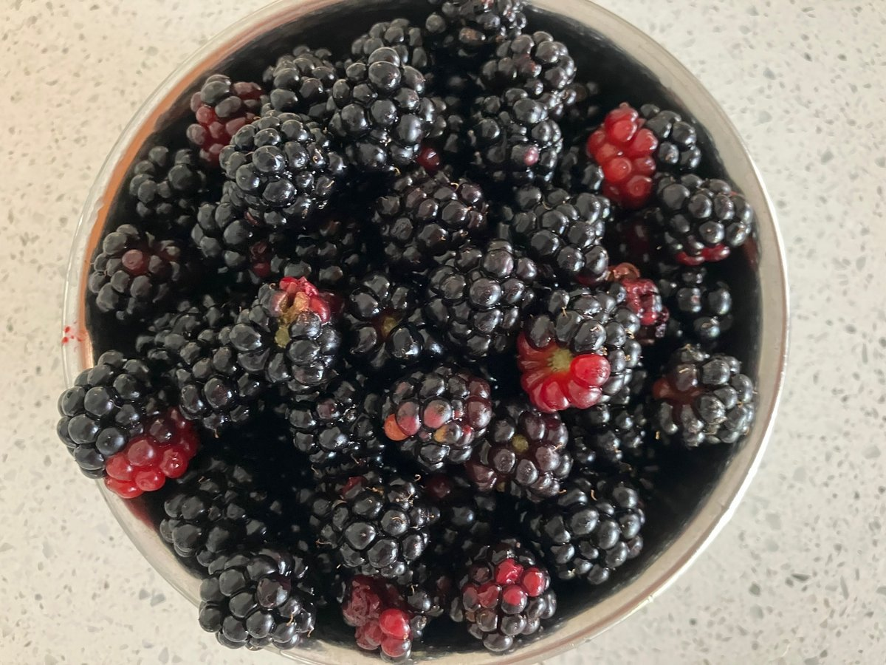

無農薬ブラックベリー・ラズベリー
ひと粒ひと粒、太陽の恵みを手摘みで。
農薬・化学肥料不使用。採れたてのみずみずしさと、ギュッと凝縮された甘酸っぱさは、無農薬・手摘みだからこその力強い味わいです。そのまま食べるのはもちろん、スムージーやお菓子作りにも最適です。
はじめまして。「西きいちご農園」の“Uターンじぃじ”です。
私は長年勤めた会社を定年退職した後、生まれ故郷であるこの地（信州・戸隠高原の麓）にUターンし、何もない荒地を一から開墾してベリー畑を作りました。
農業は決して楽ではありません。それでも、私たちが一番大切にしているのは、「農薬も化学肥料も一切使わない」こと。それは、遊びに来た孫たちが、土にまみれて泥だらけになりながら、安心してその場で実を頬張れる場所でありたいからです。
戸隠の澄んだ空気と、ふかふかの土、そしてたっぷりの愛情で育ったベリーたち。
私たちの小さな農園の恵みを、ぜひ皆さまの食卓でも楽しんでいただければ幸いです。
西きいちご農園 園主（Uターンじぃじ）
大切に育てたベリーと、素材の良さを引き出す無添加の手作り加工品。
ひと粒ひと粒、太陽の恵みを手摘みで。
農薬・化学肥料不使用。採れたてのみずみずしさと、ギュッと凝縮された甘酸っぱさは、無農薬・手摘みだからこその力強い味わいです。そのまま食べるのはもちろん、スムージーやお菓子作りにも最適です。
素材の自然な甘さと風味を、ひと瓶に閉じ込めて。
丁寧に手摘みした無農薬ベリーとグラニュー糖だけを使用し、コトコトと手作業で時間をかけて煮詰めた天然型の無添加ジャムです。色鮮やかな紫色と、豊かな香り、ベリー本来のほどよい酸味が特徴です。長野市ふるさと納税の返礼品にも選ばれています。
農園のベリーが、特別なルビー色の一杯に。
「ワイン作りへの憧れ」から始まり、試行錯誤の末に行き着いた地元のクラフトビール醸造所とのコラボレーション。ブラックベリーの豊かな香りと爽やかな酸味が特徴の、ここでしか飲めないオリジナルエールです。
商品のご購入はこちらから
BASE公式オンラインショップへ